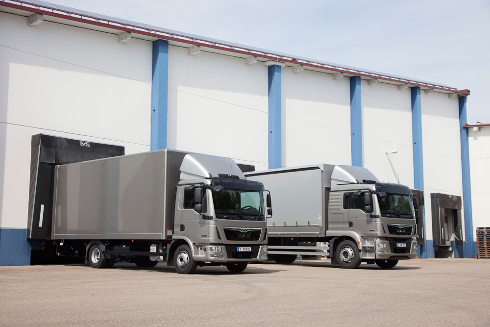
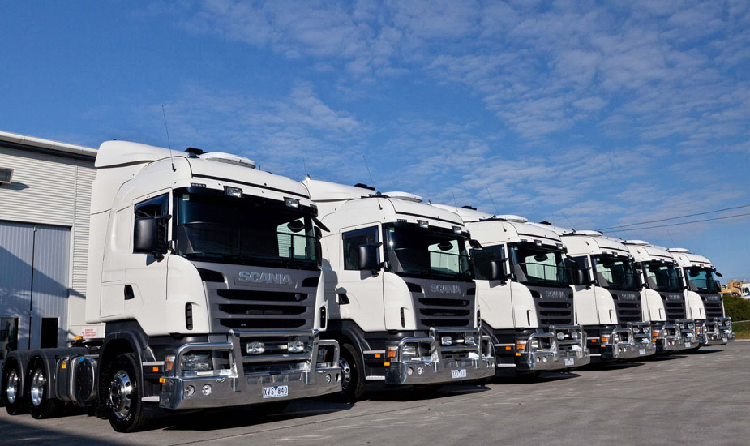
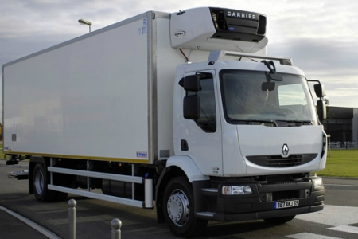
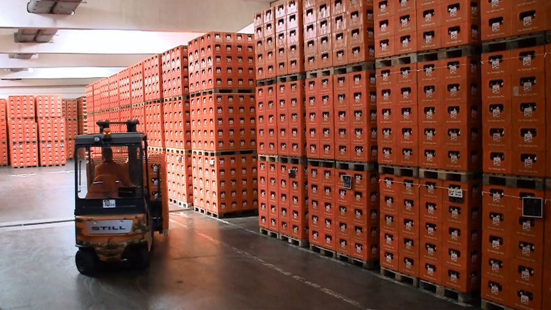
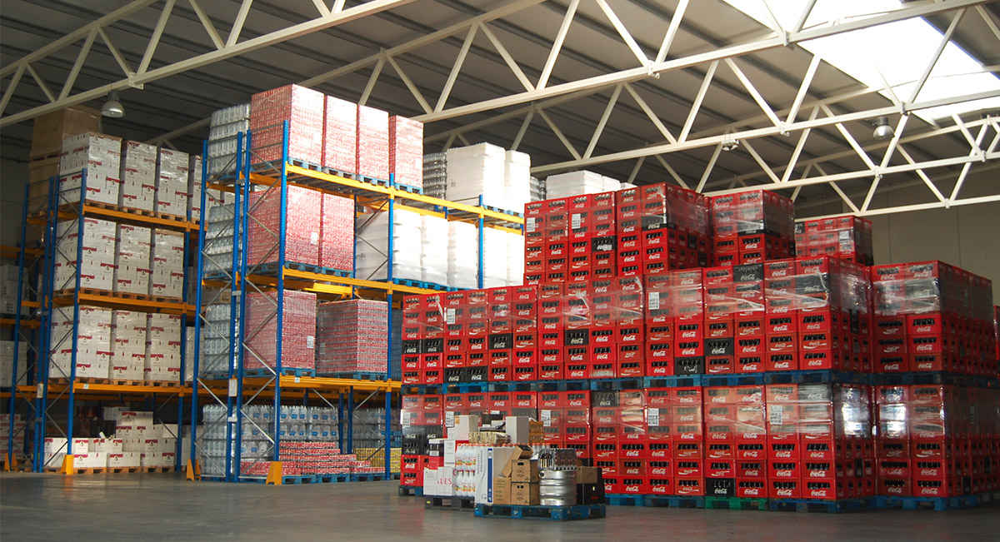
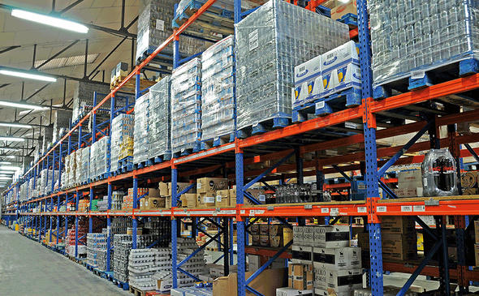

¿Quiénes somos?
Distribuciones WowDoge es una empresa destinada exclusivamente a la distribución de bebidas a bares y restaurantes.
Dedicado desde hace más de 25 años a este sector, WowDoge nace con el objetivo de ofrecer una prestación de servicios de distribución y comercialización especializada en bebidas de todo tipo, ya sea refrescos, zumos, bebidas alcóholicas; para todas aquellas empresas y fabricantes que apuestan por la calidad y el control en la conservación, manipulación, distribución comercialización y transporte de sus productos.
La profesionalidad en la ejecución de los proyectos y la confianza de nuestros clientes nos ha permitido en un corto espacio de tiempo ocupar un puesto relevante en la distribución de bebidas, destacando especialmente nuestra red de reparto.
Contamos con una acreditada experiencia en el sector de la distribución de bebidas refrigeradas y congeladas, calidad de productos suministrados, y un servicio completo permitiéndonos ofrecer al cliente el mejor servicio.
Disponemos de dos naves de 500m2 divididas en distintas secciones, con transporte propio y personal capacitado y con amplia experiencia.
Almacenes y medios de transporte
- 
- 
- 
- 
- 
- 